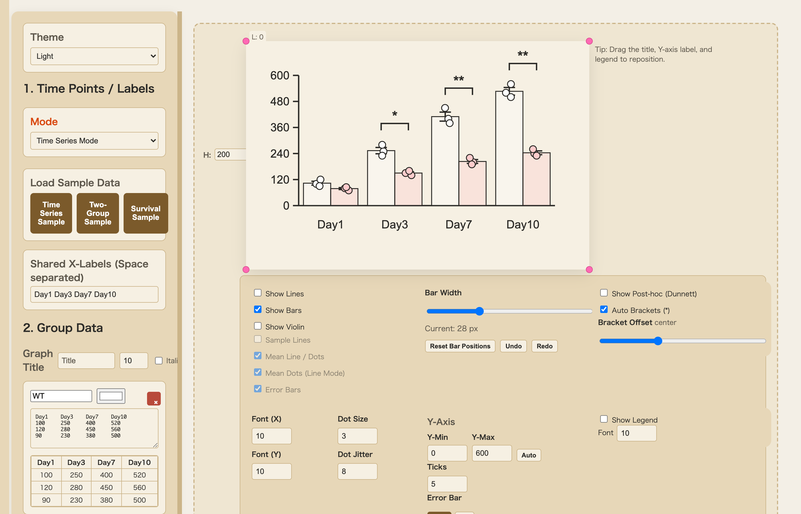
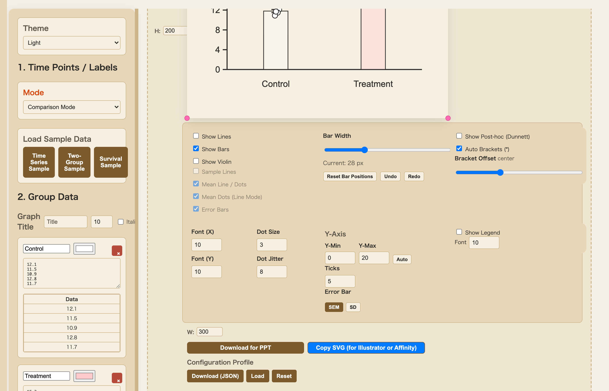
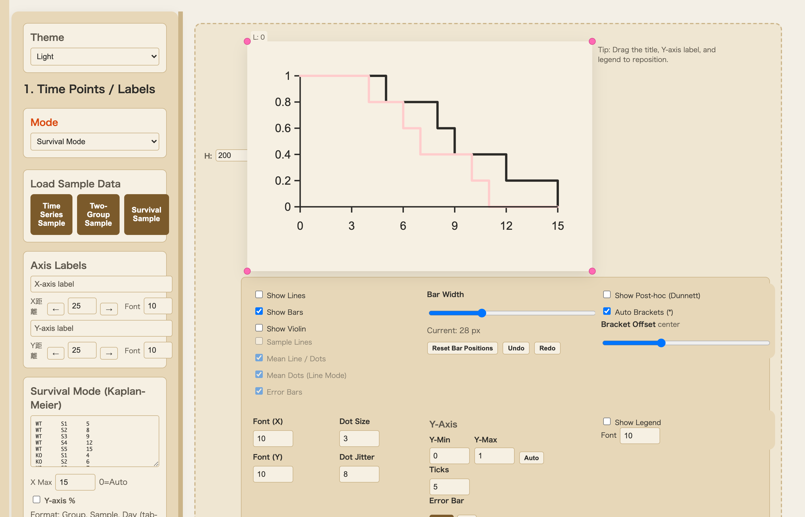
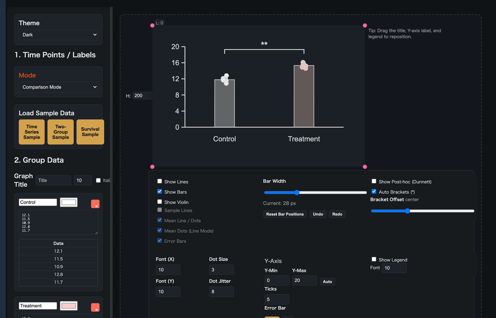
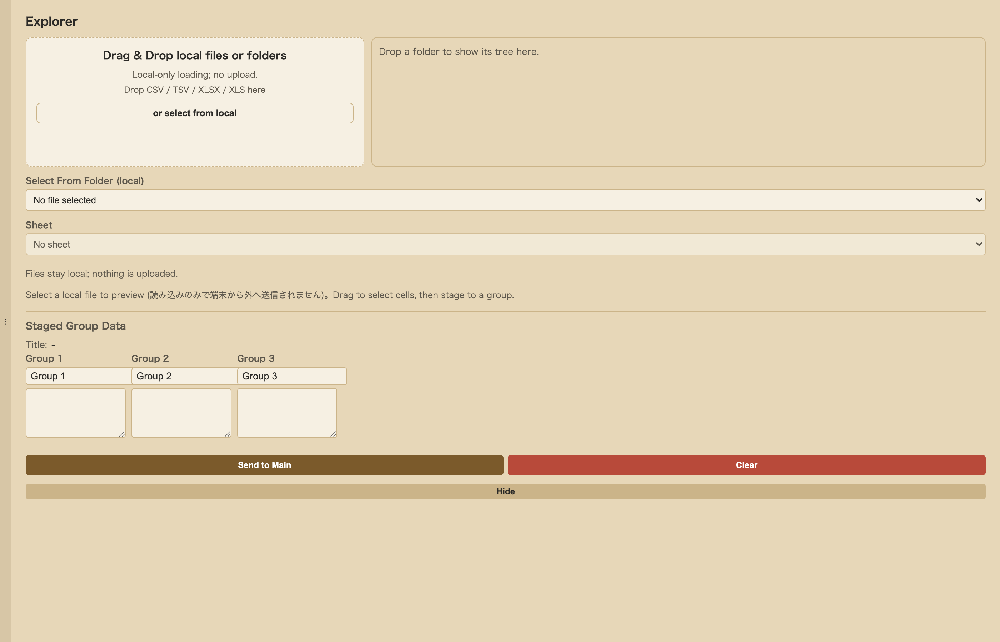

Your data never leaves your computer.
Safe for confidential research data.
No download or account required

All processing happens in your browser.
No data is ever sent to any server.
Perfect for sensitive experimental data.
Automatically calculates Welch's t-test, ANOVA, Tukey, Dunnett, and more.
P-values and significance displayed instantly.
*Final verification with GraphPad Prism / R recommended
Export as SVG format for
easy editing in PowerPoint / Illustrator.
Vector graphics that never pixelate.
Three modes for diverse research data.
Intuitive drag-and-drop layout adjustment.

Supports 2-group to multi-group comparisons. Displays scatter plots with error bars and statistical test results simultaneously.
Auto-selects Welch's t-test / ANOVA / Tukey / Dunnett.

Draws Kaplan-Meier curves with censored data support.
Log-rank test results included.

Eye-friendly dark theme included. Reduces strain during long working sessions.
Ideal for longitudinal data visualization. Line graphs with scatter plots show trends over time.
Between-group comparisons calculated at each time point.

Drag & drop CSV / TSV / Excel files to load. You can also drop entire folders to browse as a tree.
Preview data, select columns, and configure groups all through the GUI. Files are loaded locally and never sent to any server.
Copy & paste from Excel/Sheets, or load sample data
Drag labels to reposition, customize colors and sizes
Export as vector graphics, editable in PowerPoint